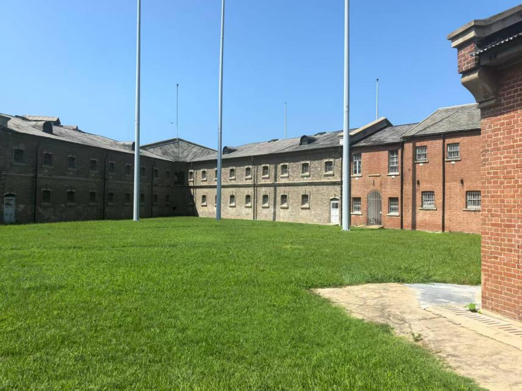

旅顺日俄监狱旧址博物馆，是我国目前保存完整、内涵丰富、规模较大、具有国际性特点的遗址类博物馆。该博物馆分为旧址展览与特别展览两大部分。旧址场景陈列由全景沙盘、检身室、东侧牢房、安重根牢房、暗牢、看守休息室、戒护系、刑讯室、看守台、遗物展、教诲室、西侧牢房、西部检身室、一工场、三角地、北大门、医务系、绞刑场、墓地复原区等19个区域组织。
原监狱于1902年由沙皇俄国始建，1907年日本扩建而成。原监狱围墙内有各种牢房275间，可同时关押2000多人；原监狱围墙外，有强迫被关押者服苦役的窑场、林场、果园、菜地等。许多中国和朝鲜、日本、俄罗斯、埃及等国家的人民曾被囚禁和屠杀于此。
截至2016年，该博物馆占地面积为26000平方米，建筑面积12521平方米。1971年7月，监狱旧址经过修复后，作为陈列馆向社会开放；1988年，监狱旧址被国务院列为全国重点文物保护单位；2005年，监狱旧址博物馆被中共中央宣传部批准授予“全国爱国主义教育示范基地”称号；2006年被国家国防教育办公室授予“国家级国防教育示范基地”称号。
 ← 返回大连地图